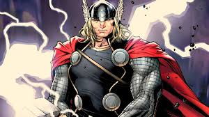
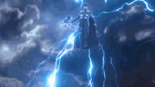
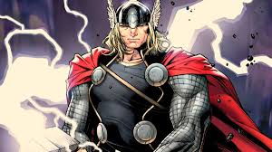
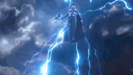

Thor
Criação e desenvolvimento
O super-herói Thor estreou na antologia de ficção científica fantasia Journey into Mystery #83 (agosto de 1962), criada por Stan Lee, Larry Lieber e Jack Kirby. Usar Thor em uma história em quadrinhos de super-heróis não foi uma novidade, a própria Marvel (quando ainda se chamava Atlas) teve a sua versão publicada em Venus #12-13 (fevereiro-abril de 1951). Ainda na década de 50, Jack Kirby havia criado uma versão de Thor para a DC Comics. Quando O Poderoso Thor surgiu nos quadrinhos Marvel, os artistas se inspiraram nas lendas nórdicas, com seus deuses e ameaças tão fantásticas. Mas ele só foi retratado como o verdadeiro deus nórdico e não um humano com poderes, quando Lee assumiu os roteiros do personagem, que no início ficaram a cargo de seu irmão, Larry Lieber.
Biografia de Thor
Filho de Odin, o deus supremo de Asgard e de Jord, a deusa da Terra, Thor Odinson é o príncipe de um outro mundo existente numa dimensão acima de Midgard, a Terra. Em sua juventude, Thor Odinson tinha comportamento arrogante e impulsivo e, em uma de suas aventuras, cometeu uma grave falta. Perseguindo um pássaro de pedra que causava muita destruição, acabou invadindo o reino dos Gigantes de Gelo e violou o tratado estabelecido por Odin. Para punir o filho e lhe ensinar a virtude que lhe faltava, este disse: "Tu és o filho favorito de Odin! Além de valente e nobre, tua alma é imaculada! Mas ainda assim és incompleto! Não tens humildade! Para consegui-la deverás conhecer a fraqueza… sentir dor! E para isso necessitas deixar o Reino Dourado e despir-te de tua aparência divina! A Terra, lá aprenderás que ninguém pode ser verdadeiramente forte se, em realidade, não for humilde! Por um tempo não mais serás o Deus do Trovão! A tua memória também tirarei! Agora, vai! Uma nova vida te espera!". Assim nasceu o Doutor Donald Blake, com as memórias de uma vida humana, sem saber quem era na verdade. Sendo um talentoso médico, porém manco de uma perna, Thor foi, pouco a pouco, aprendendo a lição da humildade até que seu destino se cumpriu. Assim, Midgard (a Terra) ganhou mais um poderoso defensor, pois a compaixão de Thor com os mortais e a ligação mística com sua mãe fez com que ele preferisse, por várias vezes, continuar em Midgard à retornar definitivamente à Asgard, mesmo recebendo punições de Odin
  
 
Poderes do Thor
- Força Divina:
- Super Resistência:
- Super Velocidade:
- Auto-Sustentação:
Thor é muito importante por ser o mais forte entre os asgardianos, capaz de erguer sem esforço objetos que pesam milhões de toneladas como até montanhas
a resistência de Thor é tão grande que o deixa invulnerável a ataques de energia, fogo e frio extremos, tiros de alto calibre, bombas atômicas e ataques da manifestação da fênix.
sua velocidade, agilidade e reflexos estão acima de um humano, sendo capaz de se movimentar a altas velocidades, desviar de ataques físicos e de energia facilmente.
Thor é capaz de sobreviver no vácuo do espaço sem precisar dormir, respirar, comer ou beber para sobreviver.
Thor tem diversos outros poderes, sendo considerado um dos personagens mais fortes da Marvel.
O martelo Mjölnir
Odin criou para Thor a mais fiel e poderosa arma possível, o martelo Mjolnir. Feito de um minério místico especial chamado Uru e forjado no coração de uma estrela pelos Deuses ferreiros de Asgard, Brokk e Eitri, os lendários ferreiros. Essa fantástica arma, quando arremessada, sempre retorna à mão do possuidor. O Martelo mágico também é capaz de criar portais entre dimensões, desferir golpes poderosos, além absorver qualquer tipo de energia e relançá-la ampliada. Thor, ao girar o martelo místico a incríveis velocidades, cria um escudo intransponível. Como se não bastasse, o martelo ainda é imbuído com diversos encantamentos misteriosos. De acordo com a magia colocada no martelo, somente aquele que fosse digno poderia erguê-lo, um subterfúgio criado por Odin, temendo que arma tão poderosa pudesse cair em mãos errôneas e perigosas.